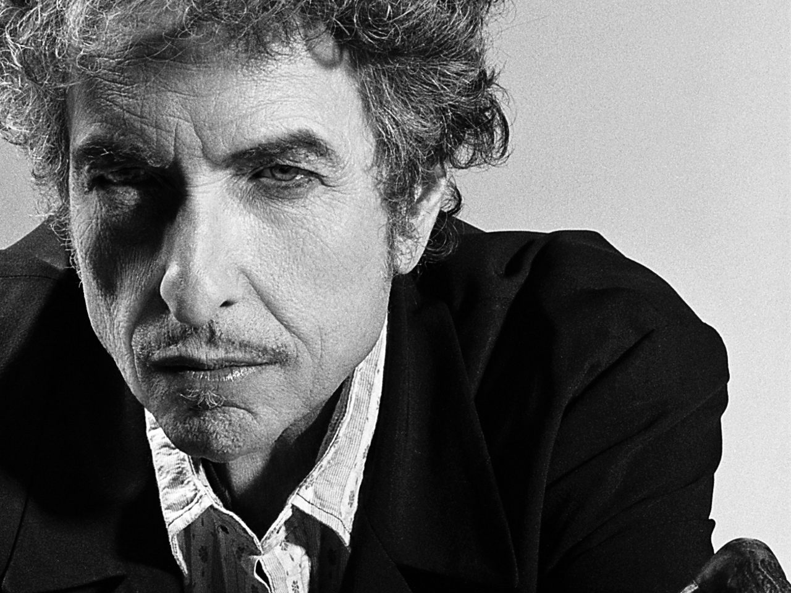

1960
Erste Auftritte unter dem Namen Bob Dylan in Folk-Clubs in Dinkytown.
Januar 1961
Ankunft in New York City und diverse Treffen mit Woody Guthrie.
März 1962
Veröffentlichung des Albums Bob Dylan.
August 1963
Martin Luther Kings Rede "I have a dream".
November 1963
John F. Kennedy wird ermordet.
Januar 1964
Die Beatles veröffentlichen ihr Album Meet the Beatles! in den USA.
Juli 1964
Der Civil Rights Act von 1964 tritt in Kraft.
Juli 1964
Auftritt auf dem Newport Folk Festival.
Juli 1965
Elektrisch verstärkter Auftritt auf dem Newport Folk Festival. Empörung unter den Folk-Fans.
August 1965
Veröffentlichung des Albums Highway 61 Revisited mit dem Song Like a Rolling Stone.
Juli 1966
Motorradunfall - die folgenden Auftritte werden abgesagt.
April 1967
Große Protestmärsche gegen den Vietnamkrieg.
August 1967
Das Jimi Hendrix Experience Debutalbum Are you Experienced? wird in den USA veröffentlicht.
Oktober 1967
Woody Guthrie stirbt.
April 1968
Martin Luther King wird ermordet.
Juni 1968
Robert Kennedy wird ermordet. In New York starten erste Bewegungen für die Rechte von Homosexuellen.
August 1969
Woodstock Festival.
April 1970
Paul McCartney gibt die Auflösung der Beatles bekannt.
September 1970
Jimi Hendrix stirbt.
Juni 1972
Die Watergate Affäre.
März 1973
Die letzten amerikanischen Soldaten werden aus Vietnam abgezogen.
Juli 1973
Dylan veröffentlicht Knockin' on Heaven's Door.
April 1975
Mit dem Fall von Saigon endet der Vietnam-Krieg.
Dezember 1979
Die UDSSR marschiert in Afghanistan ein.
Dezember 1980
John Lennon wird ermordet.
August 1981
MTV geht auf Sendung.
März 1982
Dylan wird in die Songwriter's Hall of Fame aufgenommen.
Januar 1988
Dylan wird in die Rock and Roll Hall of Fame aufgenommen.
November 1989
Fall der Berliner Mauer.
August 1990
Der Irak fällt in Kuwait ein. Der Golfkrieg beginnt.
Dezember 1991
Auflösung der Sowjetunion.
Mai 1992
Mit der Belagerung von Sarajevo beginnt der verheerendste Konflikt in Europa seit dem Zweiten Weltkrieg.
Februar 1994
Die NATO interveniert im bosnischen Bürgerkrieg.
Februar 1996
Ende der Belagerung von Sarajevo.
September 2001
Terroranschläge auf das World Trade Center in New York und das Pentagon.
Oktober 2001
Die USA marschieren in Afghanistan ein.
November 2001
George Harrison stirbt.
März-Mai 2003
Ein US-geführtes Bündnis marschiert im Irak ein.
September 2003
Johnny Cash stirbt.
Dezember 2003
Saddam Hussein wird gefangen genommen.
Oktober 2004
Dylan veröffentlicht die Autobiografie Chronicles, Vol. 1 und Lyrics, 1962-2001.
Dezember 2006
Saddam Hussein wird hingerichtet.
Dezember 2008
Weltwirtschaftskrise.
Dezember 2010
Start des Arabischen Frühlings.
Mai 2011
Osama Bin Laden wird von US-amerikanischen Spezialkräften getötet.
Dezember 2011
Offizielles Ende des Irak-Kriegs.

We live in a political world
Love don't have any place
We're living in times where men commit crimes
Any crime don't have a face
Born into the first generation of rock and rollers, [Bob Dylan] has marked time with his changing times since his first public perfomance in 1960. [...] His music often critiques forms of complacency and intolerance without mentioning a social ill or an institutional abuse by name. But because he first appeared in Greenwich Village at the start of the 1960s and melted right into the spirit of those times - a decade when protest was the conspicuous function of folk and rock music - many felt Dylan was their sympathizer.
Die hier dargestellte epochale Einteilung von Dylans Schaffensphasen bezieht sich auf jene nach Donald Brown in Bob Dylan: American Troubadour (2014).